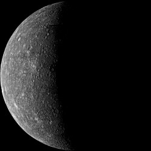
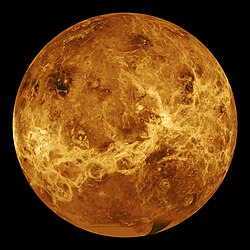
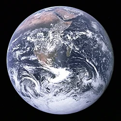
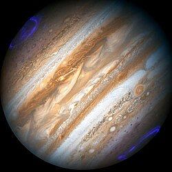
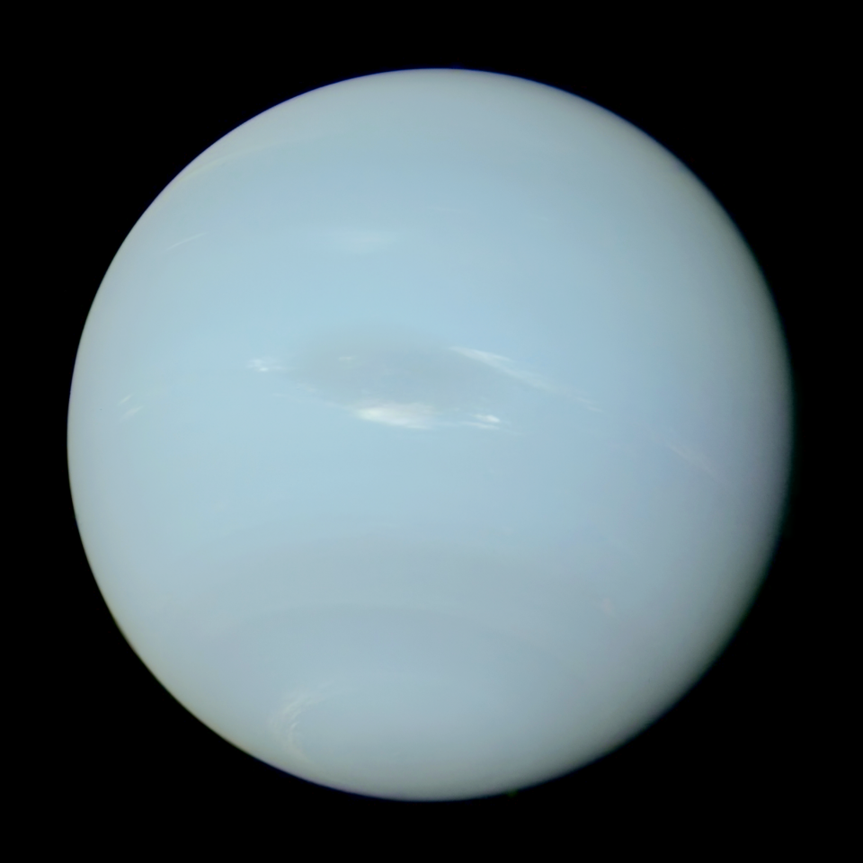

Планеты Солнечной системы
Нажмите на любую планету, чтобы узнать подробную информацию о ней.

Меркурий
Меркурий — ближайшая к Солнцу планета. Небольшая и каменистая, поверхность усеяна кратерами. Нет атмосферы, температура сильно колеблется.

Венера
Венера — вторая планета от Солнца. Плотная атмосфера из углекислого газа и серные облака создают сильный парниковый эффект. Поверхность скрыта облаками.

Земля
Земля — наша родная планета. Покрыта океанами и материками, поддерживает жизнь благодаря атмосфере, содержащей кислород. Имеет естественный спутник — Луну.
Марс
Марс — Красная планета с пустынными ландшафтами и тонкой атмосферой. На Марсе находятся крупнейшие вулканы Солнечной системы и каньоны.

Юпитер
Юпитер — газовый гигант с массивной атмосферой. Знаменит Большим Красным Пятном — гигантской бурей. Имеет более 90 спутников.
Сатурн
Сатурн — газовый гигант с кольцами из льда и камней. Одни из самых красивых объектов в Солнечной системе для наблюдения через телескоп.
Уран
Уран — газовый гигант голубого цвета из-за метана. Осевое вращение почти лежит на боку. Имеет ледяные кольца и несколько спутников.

Нептун
Нептун — синяя планета с сильными ветрами и бурями. Обладает ледяными спутниками и тонкой атмосферой из водорода, гелия и метана.